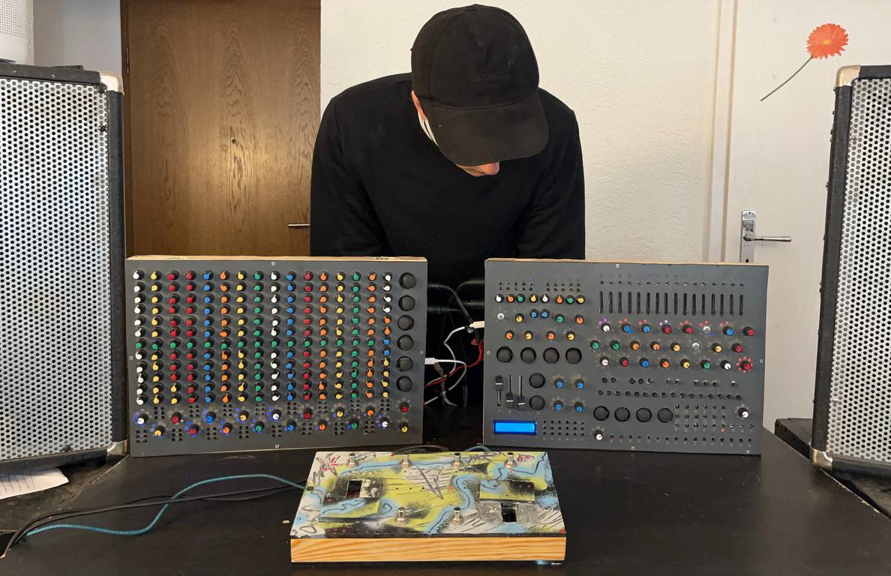
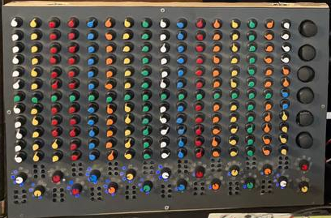
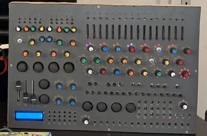
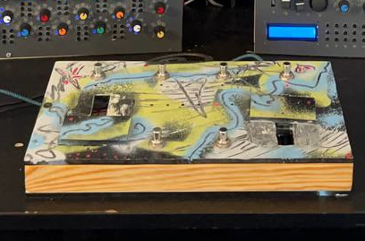
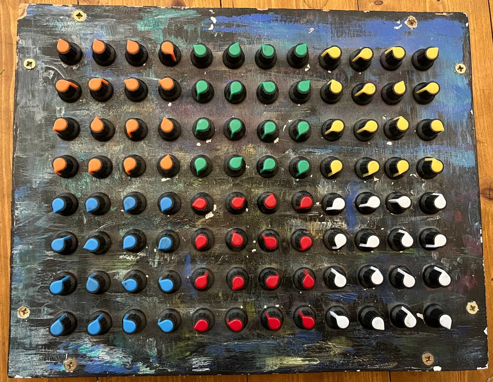

SuperCollider is an open-source programming language and environment for real-time audio synthesis and algorithmic composition, developed since the mid-1990s and used in the fields of computer music, sound art and live coding. I have been working intensively with SuperCollider since 2017, focusing on algorithmic composition and developing my own custom ways of interacting with synthesizers, rather than live coding in the traditional sense.
Since 2022 I have been extending this work into hardware, building my own MIDI controllers using Arduino and later the RP2040 microcontroller, chosen for its significantly higher processing speed. The controllers are designed to interface directly with SuperCollider, combining custom-built hardware with real-time software synthesis into a single integrated performance instrument.
// Simple SuperCollider Example
{
var a=1/(1..12);
var sweep = Line.ar(start: 0, end: 1, dur: 10);
var trig_f = 9 * a * sweep.lincurve(0, 1, 0.2, 10, 6);
var trig = Impulse.ar(freq: trig_f);
var decay = LFTri.ar(freq: a).range(0.1, 1);
var sig = Ringz.ar(in: trig, freq: 99/b, decaytime: decay);
var hpf_f = sweep.lincurve(0, 1, 50, 15000, 5);
sig = HPF.ar(in: sig, freq: hpf_f);
sig = Splay.ar(inArray: sig)/4;
sig = sig + GVerb.ar(in: sig * sweep);
}.play;This synthesizer is my personal magnus opus, a large-scale custom-built instrument 3 years in the making. Its control surface comprises:

All controls transmit MIDI to SuperCollider through my audio interface, with every button capable of carrying multiple functions depending on context and programming. The synthesizer runs entirely on my own code, implementing a broad range of synthesis techniques including wavetable synthesis, FM synthesis and more, alongside samplers, loopers, arpeggiators, Euclidean rhythm algorithms for drums and cybernetic systems. The result is a fully self-contained instrument designed entirely around my own compositional and performative needs.

The left side of the synthesizer houses a matrix of 16 rows of 12 potentiometers, with each row dedicated to a separate channel, covering instruments such as synth, drums, bass and guitar, among others. The drum channel is further subdivided into individual voices, including kick, snare and more. Each channel can be processed with a range of effects including distortion, tremolo, sidechain compression and glitch effects, and most notably interacts with a highly versatile looping algorithm. Every channel has its own dedicated loopers, each of which can be altered and manipulated in a variety of ways. These are just some of the functionalities each channel provides.
The right side of the synthesizer is divided into many smaller sections, each functioning as a self-contained instrument. Every section can be reassigned to a different functionality at any time. This includes synthesizers that can be played via an external MIDI piano, as well as synthesizers that play autonomously. The synthesis engines range from simple frequency modulation to complex drum algorithms and cybernetic systems. The looper station can be fed directly into a sampler, allowing previously recorded loops to be cut and rearranged in real time, or used to play and slice drum loops. The right side also features a large number of dual-axis joysticks, for which I implemented an algorithm that maps the two dimensions of each joystick to a large number of synthesizer variables simultaneously, making a single joystick capable of controlling hundreds or even thousands of parameters at once. These are just some of the functionalities already implemented, with new ones being added continuously.

Alongside the main synthesizer, I constructed a wooden foot pedal featuring 6 buttons and 2 faders. While most of its functionality is also present in the larger synthesizer in some form, the foot pedal allows for hands-free interaction during performance, freeing up attention for the main instrument.

The pedal covers a wide range of functions including recording and backtracking loops, triggering drum algorithms, and controlling distortion levels for guitar or synthesizer. Its functionality can be switched with a single button press. For simplicity, three buttons remain fixed in their function at all times, while the remaining three buttons and both faders switch their assignment depending on the selected mode.

This is an early prototype that preceded the main synthesizer, used in my previous setup as the foundation from which the larger instrument evolved. It features a grid of 12 by 8 potentiometers, originally serving a similar function to the left side of the main synthesizer. The prototype is no longer used for musical purposes, but I am considering repurposing it for visual interaction, where turning the knobs would control and manipulate visuals in a playful and intuitive way, much like the synthesizer does with sound.
This project is still in its early stages. I am developing a line of standalone effects pedals and synthesizers built on Raspberry Pi and programmed in SuperCollider, distilling the work from my main synthesizer into a smaller and more consumer friendly form. SuperCollider makes it also possible to quickly develop custom instruments and effects tailored to the specific needs of an artist.
To move beyond hand wiring every component, I have begun designing my own PCBs in KiCad, which not only improves build quality and reliability but also lays the groundward for small scale production. While manufacturing at scale as a solo builder has its limits, the PCB designs make the process significantly more repeatable and efficient.
Improvisation recorded in 2023, performed on the setup that preceded the current synthesizer. A lot has changed since.
Under the artist name MVROWI, I make music using my self-built synthesizers, a MIDI piano and guitar. Inspired by a mix of black metal, breakbeats, noise and a strong emphasis on melody, the music explores melancholic atmospheres and loops that are broken down and reassembled live into something new. Everything heard is generated and interacted with in real time, with no playback or pre-recorded material involved. I am continuously drawn towards more experimental sounds and textures.
I am also an active member of an experimental and noise label founded in 2025, which within its first year has already organized 7 concerts to strong reception. The label operates in genres that rarely find a dedicated platform, making it a meaningful space for artists working outside the mainstream.